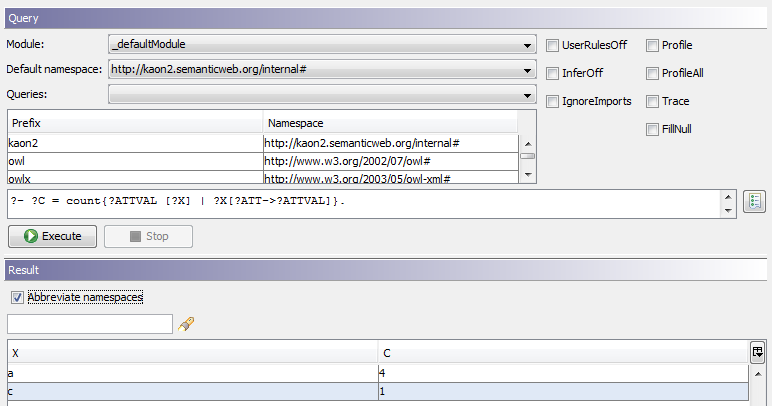

|

|
|
Aggregations |
|
|
|
|
Aggregations |
Aggregations are built-ins which have a set of values as a domain. Aggregations must not occur in rule cycles and the tackled values must not occur in the head of rules.
The syntax generally looks like this:
?- ?RESULT = sum{<input value>[<groupingkey>] | <query for values>}.
<input value> These are the input values for the aggregation.
<groupingkey> the grouping key groups the results to a group. Given the following example:
Given the values: g1, k1, 5
g2, k2, 10
g1, k3, 2
results in the following values:
g1, 7
g2, 10
<query for values> Query defining on how to get the values for the input for the aggregation.
?RESULT Variable containing the result of the aggregation.
Calculating salaries
Here we have some data about the employees of a company. Bill and Marc work in sales, Joe, Jack, Susan and Valerie develop software and Jane and Steve work in the research department:
Bill[hasSalary->60].
Bill[worksIn->Sales].
Marc[hasSalary->60].
Marc[worksIn->Sales].
Joe[hasSalary->60].
Joe[worksIn->Development].
Jack[hasSalary->40].
Jack[worksIn->Development].
Susan[hasSalary->100].
Susan[worksIn->Development].
Valerie[hasSalary->20].
Valerie[worksIn->Development].
Jane[hasSalary->70].
Jane[worksIn->Research].
Steve[hasSalary->30].
Steve[worksIn->Research].
The CEO wants to find out the department with the highest personnel costs. So she executes the following query:
?- ?SUM = sum{?S [?D] | ?X[worksIn->?D] AND ?X[hasSalary->?S]}.
The [?C] is the grouping variable (we want to group by the department). As we want to sum up the salaries, we specify the sum (?S) as the aggregation input. The result is
?D ?SUM
------------------
Sales 120
Development 220
Research 100
So the software department has the highest personnel costs. But as the number of employees differs we want to calculate the average salaries in each department:
?- ?AVG = avg{?S [?C] | ?X[worksIn->?C] AND ?X[hasSalary->?S]}.
The result is
?D ?AVG
------------------
Sales 60
Development 55
Research 50
So the employees of the sales department have the highest average salary.
Simple Counting Example
The ontology consists of the following facts:
p(gid1,key1,1).
p(gid1,key2,1).
p(gid1,key3,1).
p(gid1,key4,1).
p(gid2,key1,1).
p(gid2,key2,1).
p(gid2,key3,1).
The following query counts all of the existing values for every gid (gid1 and gid2).
?- ?C = count{?Z [?X] | p(?X,?Y,?Z)}.
Identical keys are eliminated, so the result is
gid1,4
gid2,3
ObjectLogic Counting Example
A[ref {0:*} *=> A].
A[ref1 {0:*} *=> A].
a:A.
b:A.
c:A.
d:A.
a[ref->{a,b}].
a[ref->d].
a[ref1->d].
c[ref1->d].
To see, which instance X has how many values ATTVAL, use the following query:
?- ?C = count{?ATTVAL [?X] | ?X[?ATT->?ATTVAL]}.
The result is

To see which instance X has how many values ATTVAL for which attribute ATT, use:
?- ?C = count{?ATTVAL [?X,?ATT] | ?X[?ATT->?ATTVAL]}.
This query will deliver the results
X ATT C
---------------
a ref 3
a ref1 1
c ref1 1
Handling of Duplicates
One implicit feature of aggregations is the handling of duplicates. By default, all of the variables that occur in the query of the aggregation, except for the grouping variables, are taken into consideration when determining the tuples to consider.
Example:
?- ?Sum = sum { ?S [?C,?D] | ?C:Companay[department->?D], ?D:Department[member->?E], ?E:Employee[salary->?S]}.
Here, duplicate elimination occurs on the tuples (?E,?S) for each group defined by (?C,?D).
Sometimes you need a different specification of duplicates in your aggregation. Assume that you have the following ontology:
Family[member {0:*} *=> Person].
Person[likes {0:*} *=> Thing].
Music:Thing.
Shopping:Thing.
Biking:Thing.
TheWatsons:Family[member -> {HenryWatson,SallyWatson}].
HenryWatson:Person[likes->{Music,Biking}].
SallyWatson:Person[likes->{Music,Shopping}].
You want to count the number of different things which are liked by any member of the Watson family.
You may start with a query for the aggregation like
?- TheWatsons[member->?M], ?M[likes->?X].
For the ontology above, you get the results:
?M,?X
HenryWatson,Music
HenryWatson,Biking
SallyWatson,Music
SallyWatson,Shopping
In order to count the liked things you may write:
?- ?C = count {?X | TheWatsons[member->?M], ?M[likes->?X]}.
The duplicate elimination is performed on the tuples (?M,?X) as described above and you get the result ?C = 4. So the Music is counted twice. This is not the intended way of counting.
To fix this issue, you have to use named anonymous variables in your query. Anonymous variables are ignored in the query results. Their syntax is either just a question mark. In this case, every occurance is an own anonymous variable.
If you need the same anonymous variable in two places, you need to use a named anonymous variable. The syntax is ?#name, i.e. there is a hash mark between question mark and the variable name. The corrected query is then
?- TheWatsons[member->?#M], ?#M[likes->?X].
and the results are
?X
Music
Biking
Shopping
The counting aggregation is then
?- ?C = count {?X | TheWatsons[member->?#M], ?#M[likes->?X]}.
and you get the expected result ?C = 3.
Also note that the last query can also be written using a path expression. I.e. it is equivalent to
?- ?C = count {?X | ?X = TheWatsons.member.likes}.
This also returns ?C = 3.
Note: You need an Ontobroker >= 6.0.2 for the correct handling of anonymous variables in aggregations. Named anonymous variables were also introduced with OB 6.0.2.